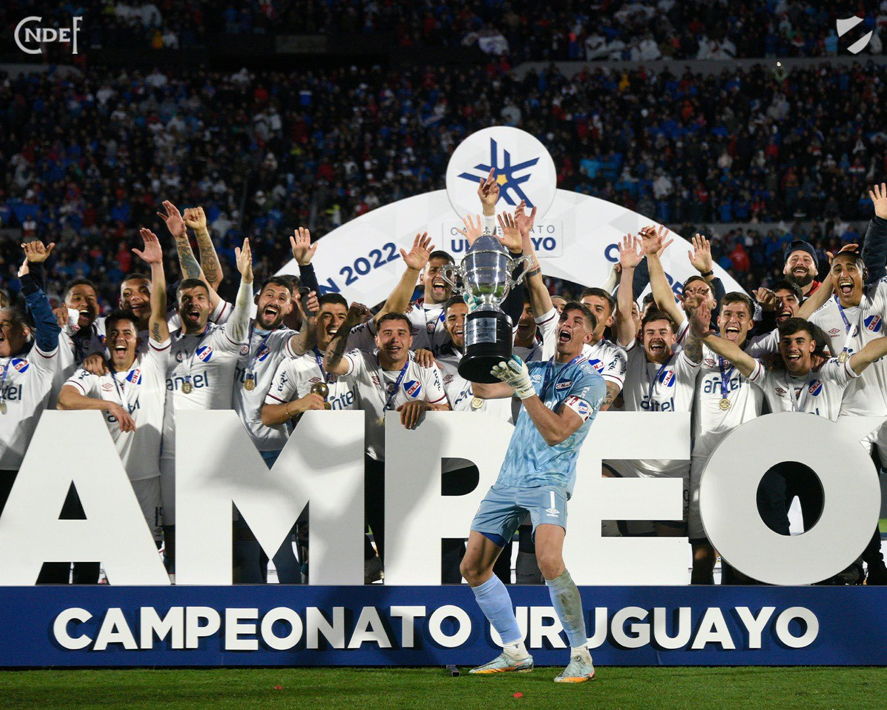

Los titulos obtenidos por el Club Nacional de Football
Titulos Nacionales
Desde sus orígenes, Nacional ha sido el padre de la gloria del fútbol uruguayo. Con un linaje y una mística ganadora inigualable, Nacional ha conquistado a través de su historia 165 títulos oficiales, que lo convierten en el club más laureado de toda América. A nivel local a ganado 49 campeonatos uruguayos.
Titulos Internacionales
A través de su historia, Nacional conquistó 22 títulos internacionales oficiales, entre los que se destacan 3 títulos de Campeón del Mundo, que lo erigieron como el “Rey de Copas” del siglo XX.